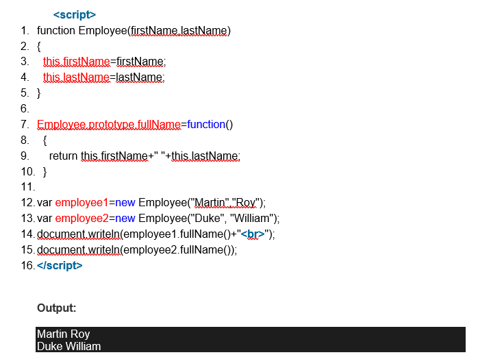
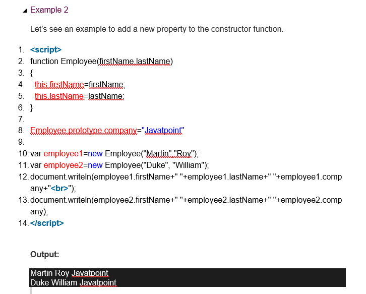

JavaScript Prototype Object
JavaScript is a prototype-based language that facilitates the objects to acquire properties and features from one another. Here, each object contains a prototype object.
In JavaScript, whenever a function is created the prototype property is added to that function automatically. This property is a prototype object that holds a constructor property.
Syntax:
1. ClassName.prototype.methodName
What is the requirement of a prototype object?
Whenever an object is created in JavaScript, its corresponding functions are loaded into memory. So, a new copy of the function is created on each object creation.
In a prototype-based approach, all the objects share the same function. This ignores the requirement of creating a new copy of function for each object. Thus, the functions are loaded once into the memory.
Prototype Chaining
In JavaScript, each object contains a prototype object that acquires properties and methods from it. Again an object's prototype object may contain a prototype object that also acquires properties and methods, and so on. It can be seen as prototype chaining.
JavaScript Prototype Object Example 1
Let's see an example to add a new method to the constructor function.

